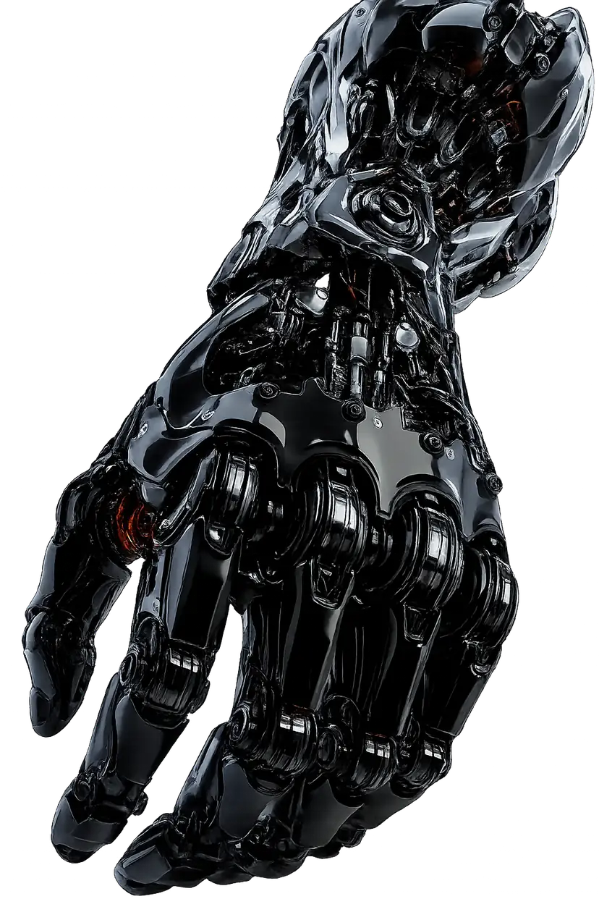

Anderson da Silva

// Quem sou eu
Sobre mim
Desenvolvedor entusiasta de sistemas embarcados, Edge AI e IoT, com atuação em projetos que envolvem treinamento de modelos de IA e criação de firmware. Desenvolvo projetos utilizando C/C++ e Python em microcontroladores como o ESP32, explorando integração de sensores, comunicação sem fio e processamento de dados na borda, onde minha experiência prática em eletrônica e robótica são o diferencial. Também busco expandir meus conhecimentos em visão computacional, infraestrutura Linux/Docker e iniciativas de PD&I.
// Trabalhos
Projetos
Clique na imagem para explorar o projeto
Título do Projeto
Descrição resumida do projeto. Substitua este texto com a descrição real do projeto ao preencher o array de dados abaixo.
// nenhum resultado para esta combinação de tags
Título do Projeto
Descrição do Projeto
Guia técnica ainda não disponível para este projeto.
// Capacitações e cursos
Certificados
Selecione um certificado para ver os detalhes
01 / 05
TÍTULO
Instituição
—
Carga Horária
—
Conclusão
—